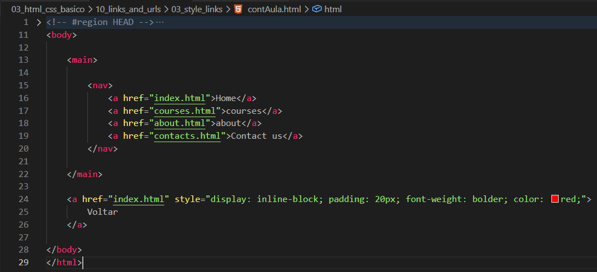
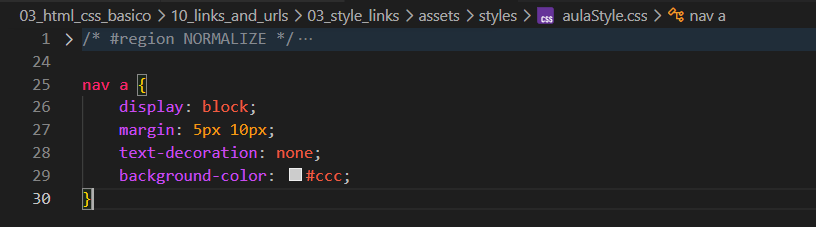
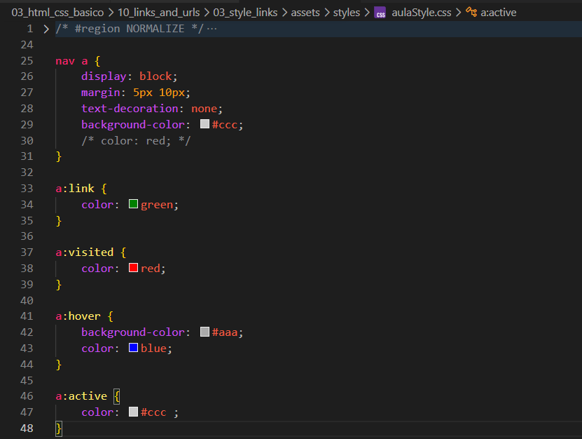

Style Links
Introdução
Aqui veremos como funciona a estilização de links utilizando CSS.
Aqui veremos como funciona a estilização de links utilizando CSS.
HTML:

CSS:

Podemos observar que temos 4 links dentro de um nav, juntamente com sua estilização em CSS.
Ao visualizar no navegador, percebemos que os links visitados possuem uma cor diferente. Isso é feito utilizando pseudo-classes no CSS.
Permite estilizar links que já foram visitados. Normalmente usamos para alterar a cor.
É importante tomar cuidado: dependendo da forma como definimos o estilo padrão dos links, pode acontecer de o estilo de visited não ser aplicado corretamente.
Representa o estado padrão de um link ainda não visitado. Com essa pseudo-classe, conseguimos definir estilos sem interferir no comportamento do visited.
É aplicado no momento do clique. Podemos usar para criar efeitos visuais enquanto o link está sendo pressionado.

Uma dica importante para não errar a ordem de precedência das pseudo-classes é lembrar de: LoVeHAte